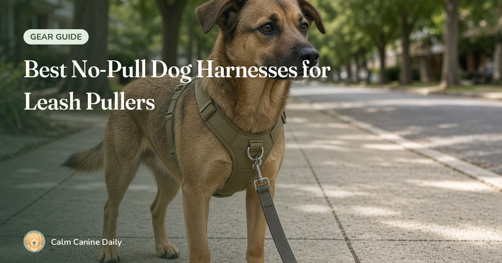

Best No-Pull Dog Harnesses for Leash Pullers

Affiliate disclosure: Calm Canine Daily is reader-supported. Some links in this article are affiliate links, including our link to Brain Training for Dogs and our Amazon product links. As an Amazon Associate I earn from qualifying purchases. If you buy through an affiliate link, we may earn a commission at no extra cost to you. We don’t pretend to be the product makers, and no trainer or brand has endorsed this article just because we may recommend their work. This is general information, not a veterinary diagnosis or a promise of a specific result.
If you are shopping for the best no-pull harness because your dog treats the leash like a tow rope, you are not a bad owner, and your dog is not a lost cause. Pulling works. It gets them to the sniff, the other dog, the dropped sandwich. A no-pull harness does not scold that habit. It changes the physics of the walk so you can teach a different one.
The right harness can make tonight’s walk feel possible. It will not, by itself, install loose-leash manners. Think of it as a well-fitted tool, then pair it with short, kind practice. For the training plan — pay for slack, become a tree, change direction — read Why Your Dog Pulls on the Leash (and How to Teach Loose-Leash Walking). This page is the buying guide, not a second copy of that lesson.
We checked five harnesses on the manufacturers’ own pages on November 20, 2026. Prices change, so check the current price before you buy. If pulling comes with pain, sudden fear, snapping, or a situation you cannot safely manage, talk with your veterinarian or a certified trainer.
Get the free 7-Day Calm Dog Checklist
One small, kind habit a day — including a short settle and a simple focus practice you can finish on a weeknight.
TL;DR
Most of the better no-pull designs move the leash to a chest clip, so a surge turns your dog slightly toward you instead of launching you down the block. Some add a back clip for easier jogging, and a few use a martingale-style loop that tightens gently across the chest or shoulders — not the throat.
The PetSafe Easy Walk is the simple, affordable front-clip starter. Choose the Easy Walk Comfort if you want padding, a handle, and a back clip. Strong pullers and odd-shaped chests often do better in the 2 Hounds Design Freedom or the Blue-9 Balance Harness. The Ruffwear Front Range is a comfortable everyday and hiking harness with a front clip you can use when needed.
Measure girth — the widest part of the rib cage, just behind the front legs — and follow that brand’s chart. A poorly fitted harness can rub, ride up the neck, or teach your dog to lean harder.
Quick comparison
Prices change often, so we link to the current listing instead of printing a number.
| Harness | Price | Leash clips | Standout details | Best for |
|---|---|---|---|---|
| PetSafe Easy Walk | Check current price on Amazon | Front chest | Lightweight, four adjustment points, contrast belly strap | A simple front-clip starter |
| PetSafe Easy Walk Comfort | Check current price on Amazon | Front or back, plus a top handle | Padded body; reflective trim on black and blue | Cushioning, mixed walks, a handy handle |
| 2 Hounds Design Freedom | Check current price on Amazon | Front and back (martingale on the back) | Swiss velvet at the armpits; wide size range | Strong pullers and dogs who chafe |
| Blue-9 Balance Harness | Check current price on Amazon | Front and/or back | Six-point adjustment; neck buckle (no head-first entry) | Hard-to-fit bodies |
| Ruffwear Front Range | Check current price on Amazon | Front chest and back V-ring | Foam padding, ID pocket, reflective trim | Daily walks plus hikes |
PetSafe Easy Walk Harness · PetSafe Easy Walk Comfort Harness · 2 Hounds Design Freedom No-Pull Harness · Blue-9 Balance Harness · Ruffwear Front Range Harness
What a no-pull harness actually does
On a standard back-clip harness, a dog can line up into a very efficient pulling stance. You lean back. They lean harder. A front-clip or dual-clip harness interrupts that straight line: a surge on the chest ring tends to turn the dog’s shoulders toward you. That is not a punishment. It just makes charging ahead less efficient, which gives you a second to ask for attention or reward walking near you.
The Easy Walk and the Freedom also use a martingale-style loop. PetSafe describes a patented front loop that tightens gradually across the shoulders. 2 Hounds Design places a patented martingale on the back and describes gentle pressure around the chest. In both cases the idea is pressure on the body, not the throat.
None of this replaces training. If the only change you make is the hardware, many dogs adapt and start pulling in the new harness too. The harness buys you a calmer classroom. The lessons still have to happen.
How to measure and fit
- Use a soft tape. Measure all the way around the widest part of the rib cage, just behind the front legs. Girth matters more than weight.
- Read that brand’s chart. The Easy Walk also asks for chest width; the Freedom uses chest girth plus strap width; Ruffwear sizes only by girth.
- When you are between sizes, follow that brand. They do not all agree. Ruffwear says to choose the larger size. 2 Hounds Design says to choose the smallest size that still fits, and treats an exact 28-inch chest as a Medium.
- Once it is on, you should be able to slide two fingers under the straps. The chest piece belongs on the bony front of the chest, not the throat. The girth strap belongs behind the armpits, not in them and not back on the soft belly.
- Watch the first walks. Rubbing, a sudden sit-down, or frantic chewing at a strap can mean the fit is off.
Some dogs hate having a harness slipped over their ears; the Blue-9 buckles at the neck for that reason.
The 5 harnesses
1. PetSafe Easy Walk Harness
See PetSafe Easy Walk Harness on Amazon
The PetSafe Easy Walk is a lightweight harness with a chest leash attachment, four adjustment points, and a contrast-colored belly strap so you are less likely to put it on backward. Sizes run from Petite (girth 12–17 inches, listed as under 10 pounds) to Extra Large (girth 32–49 inches, listed as 90 pounds and up). PetSafe says to measure, treat weight as approximate, and size up if you are between sizes. The company says the design dates to 2004 and was created by a veterinary behaviorist.
There is no back clip, slimmer straps can rub if the girth sits too far forward, and a determined chewer can damage a light harness. Choose this as an affordable, low-bulk way to start front-clip walking.
2. PetSafe Easy Walk Comfort
See PetSafe Easy Walk Comfort Harness on Amazon
The Comfort version keeps the front martingale idea and adds a padded body, a back clip, a top handle, and reflective material on the black and blue styles. Clip in front for manners work, switch to the back for a trot, and use the handle on a curb or tight stair. The official page mentions both four and five adjustment points in different spots, so we are not hanging a decision on one number.
This is a sensible upgrade if the original Easy Walk rubbed, or if you want one harness for mixed walks. A very thick-chested or long-backed dog may still need a more adjustable design such as the Blue-9 or the Freedom.
3. 2 Hounds Design Freedom No-Pull Harness
See 2 Hounds Design Freedom No-Pull Harness on Amazon
The Freedom has a front ring and a back martingale loop. The company recommends a double-connection leash so you can clip to both at once. Straps behind the front legs are lined with Swiss velvet, which matters if cheaper strap harnesses have rubbed your dog raw.
Measure the chest just behind the front legs and pick the smallest size that still fits, from a 3/8-inch XXSmall (chest 13–16 inches) to a 1-inch XXLarge (chest 36–44 inches, listed for dogs 125 pounds and up). Two Mediums share the 24–28 inch chest range: a narrower 5/8-inch strap and a 1-inch strap, with weight used only as a guide. The company describes 3,800-pound-test webbing and stainless hardware; wash gently in a pillowcase, or soak and air-dry. No harness is chew-proof — supervise, and do not leave it on in the crate.
4. Blue-9 Balance Harness
See Blue-9 Balance Harness on Amazon
Blue-9’s Balance Harness (a reflective version is also offered) has six points of adjustment and a buckle on the neck loop, so you do not have to pull it over your dog’s head. You can use the front ring, the back ring, or both. The company describes washable soft-touch nylon and says most of its products are made in the USA.
If you have ever bought a “medium” that fit the chest and choked the neck, this is the harness that tries to solve that problem. Blue-9’s own fitting notes say a front-attachment harness can still slide to one side on a strong puller, and they suggest a double-ended leash. A well-fitted harness helps you manage pulling. It does not install a perfect heel on its own.
5. Ruffwear Front Range Harness
See Ruffwear Front Range Harness on Amazon
Ruffwear’s Front Range is a padded everyday harness with four adjustment points, an aluminum V-ring on the back, and a reinforced front clip that the company says can redirect dogs that pull. There is a small ID pocket, reflective trim, and a loop for Ruffwear’s Beacon light. Girth sizes run from XXS (13–17 inches) to L/XL (32–42 inches); if you are between sizes, choose the larger one. Care: hand wash with mild detergent and air-dry.
This is not marketed as a specialist no-pull harness. It is a comfortable walking and hiking harness that includes a front attachment. If your dog only needs mild redirection and you also want trail gear, start here. If the main problem is a very strong city-sidewalk pull, look first at the Freedom, Easy Walk, or Balance.
Be skeptical of listings that promise a dog will “never pull again,” and skip prong, choke, or shock collars. Those tools can suppress pulling with pain or fear.
A kind way to introduce the new harness
Do not go from “box on the table” to “20-minute walk past the dog park.” Let your dog sniff the harness. Feed a few treats as you drape it, buckle it, and take three steps in the hallway. If they freeze, you went too fast.
On the first outdoor walks, use the front clip — or front and back together, if the harness allows it. Keep sessions short. When the leash tightens, stop or change direction, then reward the moment there is slack. You are making “walk near me” the thing that works. The full loose-leash plan is in our guide to stopping leash pulling.
A harness helps. Training is what changes the walk.
Gear can make pulling easier to manage today. It does not teach your dog that walking with you pays better than charging ahead. If you want a force-free, at-home program of short mental games, written lessons, and a behavior archive, take a look at Brain Training for Dogs, created by CPDT-KA trainer Adrienne Farricelli.
FAQ
Will a no-pull harness hurt my dog?
A well-fitted chest-style harness is meant to keep pressure off the throat. A poorly fitted one can rub, restrict the shoulders, or ride up. Watch for redness, and ask your vet if your dog has a neck, back, or shoulder issue.
Can I leave the harness on all day?
We would not. Use it for walks and training, then take it off so straps cannot catch or get chewed.
My dog still pulls. Did I buy the wrong one?
Not necessarily. Check the fit first, then your training: are you rewarding slack, or only surviving the block? Many dogs need both a better tool and clearer practice.
Is a front-clip harness enough for a reactive dog?
It can help you turn a dog away from a trigger. It is not a treatment for reactivity. If your dog lunges, snaps, or has a bite history, get in-person help.
When should I call a professional?
If walks feel unsafe, if pulling started suddenly with signs of pain, or if fear or aggression is in the mix, talk with your veterinarian and a certified trainer or veterinary behaviorist.
Get the free 7-Day Calm Dog Checklist
If you want a simple week of short, kind habits to practice at home — including work on settling and paying attention to you — the checklist is free.
Related guides
- Why Your Dog Pulls on the Leash (and How to Teach Loose-Leash Walking)
- How to Stop Your Dog From Jumping on Guests
- Why a Tired Dog Still Won’t Settle
- Brain Training for Dogs review
- Leash and walk guides
- Get the free 7-Day Calm Dog Checklist
Sources and product pages checked
Sizing and feature details in this article were checked on the official pages below on November 20, 2026. They can change.
- PetSafe Easy Walk Harness: https://www.petsafe.com/p/easy-walk-harness/EWH-HC-S-APL/
- PetSafe Easy Walk Comfort Harness: https://www.petsafe.com/p/easy-walk-comfort-no-pull-dog-harness/CMFT-M_L-BLK/
- 2 Hounds Design Freedom No-Pull Harness: https://2houndsdesign.com/products/black-freedom-no-pull-dog-harness
- Blue-9 Balance Harness: https://www.blue-9.com/products/bhb
- Blue-9 Reflective Balance Harness (reflective version): https://www.blue-9.com/products/reflective-balance-harness-1
- Blue-9 fitting notes: https://www.blue-9.com/pages/balance-harness-fitting
- Ruffwear Front Range Harness: https://ruffwear.com/products/front-range-everyday-dog-harness
- Ruffwear harness comparison guidance: https://ruffwear.com/pages/choosing-the-right-dog-harness
- 7-Day Calm Dog Checklist: https://calmcaninedaily.systeme.io/free-checklist?utm_source=blog&utm_medium=cta&utm_campaign=checklist&utm_content=best-no-pull-dog-harnesses-for-leash-pullers-end